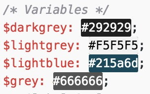
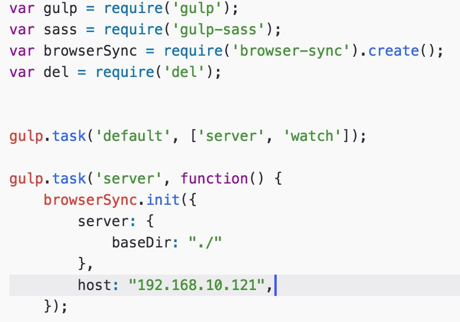

Developing my personal portfolio: the choices I made.
Published on 25/10/16
How I created this portfolio.
In this blog post, I’ll be explaining the reasoning behind my choices of layout, colours and fonts used within this website. Not only will I be explaining the aesthetics of the website, I’ll also be exploring into the back end of the site and introducing the tools I used along the way which may or may not have helped me speed up the process of achieving my goal of creating a professional portfolio.
Research
I have never been fond of the research stage, however, I’ve learnt how important it is in order to develop a website! Nonetheless, for the creation of my portfolio it was a vital necessity that I carried out a portion of research in order to help guide myself through the design and build stages.
The first step I had taken to achieve my goal was to look at common features of other portfolios. For this, I used awwwards. The reason I had chosen awwwards as my main source of research was because all of the websites listed within the directory have been nominated or given a web award of some sort. This gave me the confidence that the authors of the listed websites knew what they were on doing in terms of design. From here I took simple notes of layouts, colour schemes and typography which I found attractive.
Design
For the design stage, I used a variety of methods. Firstly, I created sketches with a piece of paper and pencil. The sketching step allowed me to quickly draft ideas regardless of my drawing abilities. I tried to incorporate my layout research into my sketches in order to make it clear to myself what was achievable and realistic.
After I had come up with a few simplistic designs on paper, I then moved onto turning them into a bunch of electronic wireframes using Sketch, a design application for Mac. I found Sketch the best option as I could pick from defualt template art boards, which are already built into the application upon installation, to help imitate different screen resolutions and devices.
Based on my research I was able to implement my colour scheme and typography into the wireframes inside of Sketch. Sketch allows full flexibility of fonts and allowed myself to edit multiple elements of the font such as font weight, letter spacing, line height and text decoration.
Dark Grey
Medium Grey
Light Grey
Blue
Development
I planned thoroughly before I begun developing my portfolio. I thought about the tools which are available to assist me with the development and also the languages and their functionalities.
I decided to use HTML and CSS to give the website a structure and some styling. I also used a small amount of Javascript to add functionality. Alongside these, I decided to use SASS as a pre-processor for CSS. The reason behind this was that SASS allowed me to create variables and mixins which meant I could reuse a block of code without having to go through the pain of retyping it every time it was needed. 
Other than languages, I found Gulp and Git extremely useful whilst I was developing. Git allowed me to constantly log my changes and revert back to an older version if something went wrong. My main use of Gulp was that it allowed me to automate the conversion of SCSS (SASS) files to CSS.
I also used Gulp for other features such as Browsersync which allowed me to create a localhost server and enabled me to view my website on different devices simultaneously without having to upload it to a web server every time there was a change. This helped speed up my responsive development immensely as I could edit the webpage and style sheet live thus meaning it would update instantly on the device I was viewing it on. 
Take a look at my GitHub profile. Patrick's GitHub Profile.